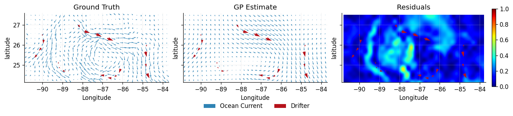

Gaussian Processes for Vector Fields and Ocean Current Modelling
In this notebook, we use Gaussian processes to learn vector-valued functions. We will be recreating the results by Berlinghieri et al. (2023) by an application to real-world ocean surface velocity data, collected via surface drifters.
Surface drifters are measurement devices that measure the dynamics and circulation patterns of the world's oceans. Studying and predicting ocean currents are important to climate research, for example, forecasting and predicting oil spills, oceanographic surveying of eddies and upwelling, or providing information on the distribution of biomass in ecosystems. We will be using the Gulf Drifters Open dataset, which contains all publicly available surface drifter trajectories from the Gulf of Mexico spanning 28 years.
from dataclasses import (
dataclass,
field,
)
from jax import (
config,
hessian,
)
import jax.numpy as jnp
import jax.random as jr
from jaxtyping import (
Array,
Float,
install_import_hook,
)
from matplotlib import rcParams
import matplotlib.pyplot as plt
import numpyro.distributions as npd
import pandas as pd
from examples.utils import use_mpl_style
from gpjax.kernels.computations import DenseKernelComputation
config.update("jax_enable_x64", True)
with install_import_hook("gpjax", "beartype.beartype"):
import gpjax as gpx
from gpjax.parameters import Parameter
# set the default style for plotting
use_mpl_style()
key = jr.key(42)
colors = rcParams["axes.prop_cycle"].by_key()["color"]
Data loading and preprocessing
The real dataset has been binned into an \(N=34\times16\) grid, equally spaced over the longitude-latitude interval \([-90.8,-83.8] \times [24.0,27.5]\). Each bin has a size \(\approx 0.21\times0.21\), and contains the average velocity across all measurements that fall inside it.
We will call this binned ocean data the ground truth, and label it with the vector field $$ \mathbf{F} \equiv \mathbf{F}(\mathbf{x}), $$ where \(\mathbf{x} = (x^{(0)}\),\(x^{(1)})^\text{T}\), with a vector basis in the standard Cartesian directions (dimensions will be indicated by superscripts).
We shall label the ground truth \(D_0=\left\{ \left(\mathbf{x}_{0,i} , \mathbf{y}_{0,i} \right)\right\}_{i=1}^N\), where \(\mathbf{y}_{0,i}\) is the 2-dimensional velocity vector at the \(i\)-th location, \(\mathbf{x}_{0,i}\). The training dataset contains simulated measurements from ocean drifters \(D_T=\left\{\left(\mathbf{x}_{T,i}, \mathbf{y}_{T,i} \right)\right\}_{i=1}^{N_T}\), \(N_T = 20\) in this case (the subscripts indicate the ground truth and the simulated measurements respectively).
# function to place data from csv into correct array shape
def prepare_data(df):
pos = jnp.array([df["lon"], df["lat"]])
vel = jnp.array([df["ubar"], df["vbar"]])
# extract shape stored as 'metadata' in the test data
try:
shape = (int(df["shape"][1]), int(df["shape"][0])) # shape = (34,16)
return pos, vel, shape
except KeyError:
return pos, vel
# loading in data
gulf_data_train = pd.read_csv(
"https://raw.githubusercontent.com/JaxGaussianProcesses/static/main/data/gulfdata_train.csv"
)
gulf_data_test = pd.read_csv(
"https://raw.githubusercontent.com/JaxGaussianProcesses/static/main/data/gulfdata_test.csv"
)
pos_test, vel_test, shape = prepare_data(gulf_data_test)
pos_train, vel_train = prepare_data(gulf_data_train)
fig, ax = plt.subplots(1, 1, figsize=(6, 3))
ax.quiver(
pos_test[0],
pos_test[1],
vel_test[0],
vel_test[1],
color=colors[0],
label="Ocean Current",
angles="xy",
scale=10,
)
ax.quiver(
pos_train[0],
pos_train[1],
vel_train[0],
vel_train[1],
color=colors[1],
alpha=0.7,
label="Drifter",
angles="xy",
scale=10,
)
ax.set(
xlabel="Longitude",
ylabel="Latitude",
)
ax.legend(
framealpha=0.0,
ncols=2,
fontsize="medium",
bbox_to_anchor=(0.5, -0.3),
loc="lower center",
)
<matplotlib.legend.Legend at 0x7fbea644d490>
Problem Setting
We aim to obtain estimates for \(\mathbf{F}\) at the set of points \(\left\{ \mathbf{x}_{0,i} \right\}_{i=1}^N\) using Gaussian processes, followed by a comparison of the latent model to the ground truth \(D_0\). Note that \(D_0\) is not passed into any functions used by GPJax, and is only used to compare against the two GP models at the end of the notebook.
Since \(\mathbf{F}\) is a vector-valued function, we require GPs that can directly learn vector-valued functions1. To implement this in GPJax, the problem can be changed to learn a scalar-valued function by 'massaging' the data into a \(2N\times2N\) problem, such that each dimension of our GP is associated with a component of \(\mathbf{y}_{T,i}\).
For a particular measurement \(\mathbf{y}\) (training or testing) at location \(\mathbf{x}\), the components \((y^{(0)}, y^{(1)})\) are described by the latent vector field \(\mathbf{F}\), such that
where each \(f^{(z)}\left(\mathbf{x}\right), z \in \{0,1\}\) is a scalar-valued function.
Now consider the scalar-valued function \(g: \mathbb{R}^2 \times\{0,1\} \rightarrow \mathbb{R}\), such that
We have increased the input dimension by 1, from the 2D \(\mathbf{x}\) to the 3D \(\mathbf{X} = \left(\mathbf{x}, 0\right)\) or \(\mathbf{X} = \left(\mathbf{x}, 1\right)\).
By choosing the value of the third dimension, 0 or 1, we may now incorporate this information into the computation of the kernel. We therefore make new 3D datasets \(D_{T,3D} = \left\{\left( \mathbf{X}_{T,i},\mathbf{Y}_{T,i} \right) \right\} _{i=0}^{2N_T}\) and \(D_{0,3D} = \left\{\left( \mathbf{X}_{0,i},\mathbf{Y}_{0,i} \right) \right\} _{i=0}^{2N}\) that incorporates this new labelling, such that for each dataset (indicated by the subscript \(D = 0\) or \(D=T\)),
and
where \(z = 0\) if \(i\) is odd and \(z=1\) if \(i\) is even.
# Change vectors x -> X = (x,z), and vectors y -> Y = (y,z) via the artificial z label
def label_position(data):
# introduce alternating z label
n_points = len(data[0])
label = jnp.tile(jnp.array([0.0, 1.0]), n_points)
return jnp.vstack((jnp.repeat(data, repeats=2, axis=1), label)).T
# change vectors y -> Y by reshaping the velocity measurements
def stack_velocity(data):
return data.T.flatten().reshape(-1, 1)
def dataset_3d(pos, vel):
return gpx.Dataset(label_position(pos), stack_velocity(vel))
# label and place the training data into a Dataset object to be used by GPJax
dataset_train = dataset_3d(pos_train, vel_train)
# we also require the testing data to be relabelled for later use, such that we can query the 2Nx2N GP at the test points
dataset_ground_truth = dataset_3d(pos_test, vel_test)
Velocity (dimension) decomposition
Having labelled the data, we are now in a position to use GPJax to learn the function \(g\), and hence \(\mathbf{F}\). A naive approach to the problem is to apply a GP prior directly to the velocities of each dimension independently, which is called the velocity GP. For our prior, we choose an isotropic mean 0 over all dimensions of the GP, and a piecewise kernel that depends on the \(z\) labels of the inputs, such that for two inputs \(\mathbf{X} = \left( \mathbf{x}, z \right )\) and \(\mathbf{X}^\prime = \left( \mathbf{x}^\prime, z^\prime \right )\),
where \(k^{(z)}\left(\mathbf{x}, \mathbf{x}^{\prime}\right)\) are the user chosen kernels for each dimension. What this means is that there are no correlations between the \(x^{(0)}\) and \(x^{(1)}\) dimensions for all choices \(\mathbf{X}\) and \(\mathbf{X}^{\prime}\), since there are no off-diagonal elements in the Gram matrix populated by this choice.
To implement this approach in GPJax, we define VelocityKernel in the following cell,
following the steps outlined in the custom kernels
notebook.
This modular implementation takes the choice of user kernels as its class attributes:
kernel0 and kernel1. We must additionally pass the argument active_dims = [0,1],
which is an attribute of the base class AbstractKernel, into the chosen kernels.
This is necessary such that the subsequent likelihood optimisation does not optimise
over the artificial label dimension.
class VelocityKernel(gpx.kernels.AbstractKernel):
def __init__(
self,
kernel0: gpx.kernels.AbstractKernel = gpx.kernels.RBF(active_dims=[0, 1]),
kernel1: gpx.kernels.AbstractKernel = gpx.kernels.RBF(active_dims=[0, 1]),
):
self.kernel0 = kernel0
self.kernel1 = kernel1
super().__init__(compute_engine=DenseKernelComputation())
def __call__(
self, X: Float[Array, "1 D"], Xp: Float[Array, "1 D"]
) -> Float[Array, "1"]:
# standard RBF-SE kernel is x and x' are on the same output, otherwise returns 0
z = jnp.array(X[2], dtype=int)
zp = jnp.array(Xp[2], dtype=int)
# achieve the correct value via 'switches' that are either 1 or 0
k0_switch = ((z + 1) % 2) * ((zp + 1) % 2)
k1_switch = z * zp
return k0_switch * self.kernel0(X, Xp) + k1_switch * self.kernel1(X, Xp)
GPJax implementation
Next, we define the model in GPJax. The prior is defined using \(k_{\text{vel}}\left(\mathbf{X}, \mathbf{X}^\prime \right)\) and 0 mean and 0 observation noise. We choose a Gaussian marginal log-likelihood (MLL).
def initialise_gp(kernel, mean, dataset):
prior = gpx.gps.Prior(mean_function=mean, kernel=kernel)
likelihood = gpx.likelihoods.Gaussian(
num_datapoints=dataset.n, obs_stddev=jnp.array([1.0e-3], dtype=jnp.float64)
)
posterior = prior * likelihood
return posterior
# Define the velocity GP
mean = gpx.mean_functions.Zero()
kernel = VelocityKernel()
velocity_posterior = initialise_gp(kernel, mean, dataset_train)
With a model now defined, we can proceed to optimise the hyperparameters
of our likelihood over \(D_0\). This is done by minimising the MLL using BFGS. We also
plot its value at each step to visually confirm that we have found the minimum. See
the introduction to Gaussian
Processes notebook for
more information on optimising the MLL.
def optimise_mll(posterior, dataset, NIters=1000, key=key):
# define the MLL using dataset_train
objective = lambda p, d: -gpx.objectives.conjugate_mll(p, d)
# Optimise to minimise the MLL
opt_posterior, history = gpx.fit_scipy(
model=posterior,
objective=objective,
train_data=dataset,
trainable=Parameter,
)
return opt_posterior
opt_velocity_posterior = optimise_mll(velocity_posterior, dataset_train)
Optimization terminated successfully.
Current function value: -26.620707
Iterations: 42
Function evaluations: 70
Gradient evaluations: 70
Comparison
We next obtain the latent distribution of the GP of \(g\) at \(\mathbf{x}_{0,i}\), then extract its mean and standard at the test locations, \(\mathbf{F}_{\text{latent}}(\mathbf{x}_{0,i})\), as well as the standard deviation (we will use it at the very end).
def latent_distribution(opt_posterior, pos_3d, dataset_train):
latent = opt_posterior.predict(pos_3d, train_data=dataset_train)
latent_mean = latent.mean
latent_std = latent.stddev()
return latent_mean, latent_std
# extract latent mean and std of g, redistribute into vectors to model F
velocity_mean, velocity_std = latent_distribution(
opt_velocity_posterior, dataset_ground_truth.X, dataset_train
)
dataset_latent_velocity = dataset_3d(pos_test, velocity_mean)
We now replot the ground truth (testing data) \(D_0\), the predicted latent vector field \(\mathbf{F}_{\text{latent}}(\mathbf{x_i})\), and a heatmap of the residuals at each location \(\mathbf{R}(\mathbf{x}_{0,i}) = \mathbf{y}_{0,i} - \mathbf{F}_{\text{latent}}(\mathbf{x}_{0,i})\), as well as \(\left|\left|\mathbf{R}(\mathbf{x}_{0,i})\right|\right|\).
# Residuals between ground truth and estimate
def plot_vector_field(ax, dataset, **kwargs):
ax.quiver(
dataset.X[::2][:, 0],
dataset.X[::2][:, 1],
dataset.y[::2],
dataset.y[1::2],
**kwargs,
)
def prepare_ax(ax, X, Y, title, **kwargs):
ax.set(
xlim=[X.min() - 0.1, X.max() + 0.1],
ylim=[Y.min() + 0.1, Y.max() + 0.1],
aspect="equal",
title=title,
ylabel="latitude",
**kwargs,
)
def residuals(dataset_latent, dataset_ground_truth):
return jnp.sqrt(
(dataset_latent.y[::2] - dataset_ground_truth.y[::2]) ** 2
+ (dataset_latent.y[1::2] - dataset_ground_truth.y[1::2]) ** 2
)
def plot_fields(
dataset_ground_truth, dataset_trajectory, dataset_latent, shape=shape, scale=10
):
X = dataset_ground_truth.X[:, 0][::2]
Y = dataset_ground_truth.X[:, 1][::2]
# make figure
fig, ax = plt.subplots(1, 3, figsize=(12.0, 3.0), sharey=True)
# ground truth
plot_vector_field(
ax[0],
dataset_ground_truth,
color=colors[0],
label="Ocean Current",
angles="xy",
scale=scale,
)
plot_vector_field(
ax[0],
dataset_trajectory,
color=colors[1],
label="Drifter",
angles="xy",
scale=scale,
)
prepare_ax(ax[0], X, Y, "Ground Truth", xlabel="Longitude")
# Latent estimate of vector field F
plot_vector_field(ax[1], dataset_latent, color=colors[0], angles="xy", scale=scale)
plot_vector_field(
ax[1], dataset_trajectory, color=colors[1], angles="xy", scale=scale
)
prepare_ax(ax[1], X, Y, "GP Estimate", xlabel="Longitude")
# residuals
residuals_vel = jnp.flip(
residuals(dataset_latent, dataset_ground_truth).reshape(shape), axis=0
)
im = ax[2].imshow(
residuals_vel,
extent=[X.min(), X.max(), Y.min(), Y.max()],
cmap="jet",
vmin=0,
vmax=1.0,
interpolation="spline36",
)
plot_vector_field(
ax[2], dataset_trajectory, color=colors[1], angles="xy", scale=scale
)
prepare_ax(ax[2], X, Y, "Residuals", xlabel="Longitude")
fig.colorbar(im, fraction=0.027, pad=0.04, orientation="vertical")
fig.legend(
framealpha=0.0,
ncols=2,
fontsize="medium",
bbox_to_anchor=(0.5, -0.03),
loc="lower center",
)
plot_fields(dataset_ground_truth, dataset_train, dataset_latent_velocity)

From the latent estimate we can see the velocity GP struggles to reconstruct features of the ground truth. This is because our construction of the kernel placed an independent prior on each physical dimension, which cannot be assumed. Therefore, we need a different approach that can implicitly incorporate this dependence at a fundamental level. To achieve this we will require a Helmholtz Decomposition.
Helmholtz decomposition
In 2 dimensions, a twice continuously differentiable and compactly supported vector field \(\mathbf{F}: \mathbb{R}^2 \rightarrow \mathbb{R}^2\) can be expressed as the sum of the gradient of a scalar potential \(\Phi: \mathbb{R}^2 \rightarrow \mathbb{R}\), called the potential function, and the vorticity operator of another scalar potential \(\Psi: \mathbb{R}^2 \rightarrow \mathbb{R}\), called the stream function (Berlinghieri et al. (2023)) such that $$ \mathbf{F}=\operatorname{grad} \Phi+\operatorname{rot} \Psi, $$ where $$ \operatorname{grad} \Phi:=\left[\begin{array}{l} \partial \Phi / \partial x^{(0)} \ \partial \Phi / \partial x^{(1)} \end{array}\right] \text { and } \operatorname{rot} \Psi:=\left[\begin{array}{c} \partial \Psi / \partial x^{(1)} \ -\partial \Psi / \partial x^{(0)} \end{array}\right]. $$
This is reminiscent of a 3 dimensional Helmholtz decomposition.
The 2 dimensional decomposition motivates a different approach: placing priors on \(\Psi\) and \(\Phi\), allowing us to make assumptions directly about fundamental properties of \(\mathbf{F}\). If we choose independent GP priors such that \(\Phi \sim \mathcal{G P}\left(0, k_{\Phi}\right)\) and \(\Psi \sim \mathcal{G P}\left(0, k_{\Psi}\right)\), then \(\mathbf{F} \sim \mathcal{G P} \left(0, k_\text{Helm}\right)\) (since acting linear operations on a GPs give GPs).
For \(\mathbf{X}, \mathbf{X}^{\prime} \in \mathbb{R}^2 \times \left\{0,1\right\}\) and \(z, z^\prime \in \{0,1\}\),
where \(x^{(z)}\) and \((x^\prime)^{(z^\prime)}\) are the \(z\) and \(z^\prime\) components of \(\mathbf{X}\) and \({\mathbf{X}}^{\prime}\) respectively.
We compute the second derivatives using jax.hessian. In the following
implementation, for a kernel \(k(\mathbf{x}, \mathbf{x}^{\prime})\), this computes the
Hessian matrix with respect to the components of \(\mathbf{x}\)
Note that we have operated \(\dfrac{\partial}{\partial x^{(z)}}\), not \(\dfrac{\partial}{\partial \left(x^\prime \right)^{(z)}}\), as the boxed equation suggests. This is not an issue if we choose stationary kernels \(k(\mathbf{x}, \mathbf{x}^{\prime}) = k(\mathbf{x} - \mathbf{x}^{\prime})\) , as the partial derivatives with respect to the components have the following exchange symmetry:
for either \(z\).
@dataclass
class HelmholtzKernel(gpx.kernels.stationary.StationaryKernel):
# initialise Phi and Psi kernels as any stationary kernel in gpJax
potential_kernel: gpx.kernels.stationary.StationaryKernel = field(
default_factory=lambda: gpx.kernels.RBF(active_dims=[0, 1])
)
stream_kernel: gpx.kernels.stationary.StationaryKernel = field(
default_factory=lambda: gpx.kernels.RBF(active_dims=[0, 1])
)
compute_engine = DenseKernelComputation()
def __call__(
self, X: Float[Array, "1 D"], Xp: Float[Array, "1 D"]
) -> Float[Array, "1"]:
# obtain indices for k_helm, implement in the correct sign between the derivatives
z = jnp.array(X[2], dtype=int)
zp = jnp.array(Xp[2], dtype=int)
sign = (-1) ** (z + zp)
# convert to array to correctly index, -ve sign due to exchange symmetry (only true for stationary kernels)
potential_dvtve = -jnp.array(
hessian(self.potential_kernel)(X, Xp), dtype=jnp.float64
)[z][zp]
stream_dvtve = -jnp.array(
hessian(self.stream_kernel)(X, Xp), dtype=jnp.float64
)[1 - z][1 - zp]
return potential_dvtve + sign * stream_dvtve
GPJax implementation
We repeat the same steps as with the velocity GP model, replacing VelocityKernel
with HelmholtzKernel.
# Redefine Gaussian process with Helmholtz kernel
kernel = HelmholtzKernel()
helmholtz_posterior = initialise_gp(kernel, mean, dataset_train)
# Optimise hyperparameters using BFGS
opt_helmholtz_posterior = optimise_mll(helmholtz_posterior, dataset_train)
Optimization terminated successfully.
Current function value: -28.611975
Iterations: 35
Function evaluations: 58
Gradient evaluations: 58
Comparison
We again plot the ground truth (testing data) \(D_0\), the predicted latent vector field \(\mathbf{F}_{\text{latent}}(\mathbf{x}_{0,i})\), and a heatmap of the residuals at each location \(R(\mathbf{x}_{0,i}) = \mathbf{y}_{0,i} - \mathbf{F}_{\text{latent}}(\mathbf{x}_{0,i})\) and \(\left|\left|R(\mathbf{x}_{0,i}) \right|\right|\).
# obtain latent distribution, extract x and y values over g
helmholtz_mean, helmholtz_std = latent_distribution(
opt_helmholtz_posterior, dataset_ground_truth.X, dataset_train
)
dataset_latent_helmholtz = dataset_3d(pos_test, helmholtz_mean)
plot_fields(dataset_ground_truth, dataset_train, dataset_latent_helmholtz)

Visually, the Helmholtz model performs better than the velocity model, preserving the local structure of the \(\mathbf{F}\). Since we placed priors on \(\Phi\) and \(\Psi\), the construction of \(\mathbf{F}\) allows for correlations between the dimensions (non-zero off-diagonal elements in the Gram matrix populated by \(k_\text{Helm}\left(\mathbf{X},\mathbf{X}^{\prime}\right)\) ).
Negative log predictive densities
Lastly, we directly compare the velocity and Helmholtz models by computing the negative log predictive densities for each model. This is a quantitative metric that measures the probability of the ground truth given the data.
where each \(p\left(\mathcal{Y}_i \mid \mathbf{X}_i \right)\) is the marginal Gaussian distribution over \(\mathcal{Y}_i\) at each test location, and \(Y_{i,0}\) is the \(i\)-th component of the (massaged) test data that we reserved at the beginning of the notebook in \(D_0\). A smaller value is better, since the deviation of the ground truth and the model are small in this case.
# ensure testing data alternates between x0 and x1 components
def nlpd(mean, std, vel_test):
vel_query = jnp.column_stack((vel_test[0], vel_test[1])).flatten()
normal = npd.Normal(loc=mean, scale=std)
return -jnp.sum(normal.log_prob(vel_query))
# compute nlpd for velocity and helmholtz
nlpd_vel = nlpd(velocity_mean, velocity_std, vel_test)
nlpd_helm = nlpd(helmholtz_mean, helmholtz_std, vel_test)
print("NLPD for Velocity: %.2f \nNLPD for Helmholtz: %.2f" % (nlpd_vel, nlpd_helm))
NLPD for Velocity: 730.13
NLPD for Helmholtz: -280.59
The Helmholtz model outperforms the velocity model, as indicated by the lower NLPD score.
Footnote
Kernels for vector-valued functions have been studied in the literature, see Alvarez et al. (2012)
System configuration
Author: Ivan Shalashilin
Last updated: Mon Oct 27 2025
Python implementation: CPython
Python version : 3.11.14
IPython version : 9.5.0
matplotlib: 3.10.6
pandas : 2.3.2
gpjax : 0.13.0
numpyro : 0.19.0
jax : 0.7.1
jaxtyping : 0.3.2
Watermark: 2.5.0